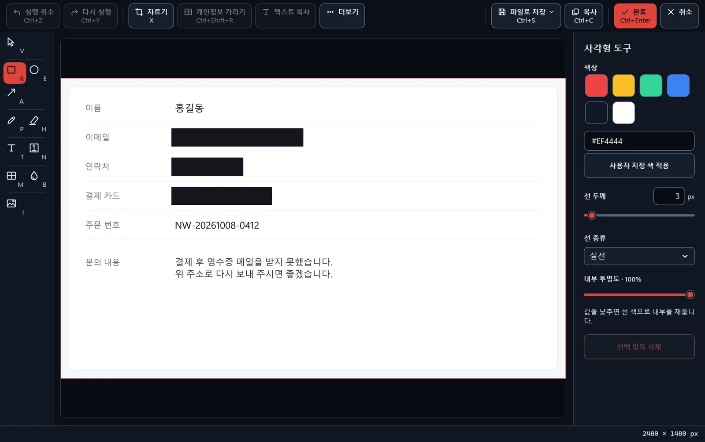
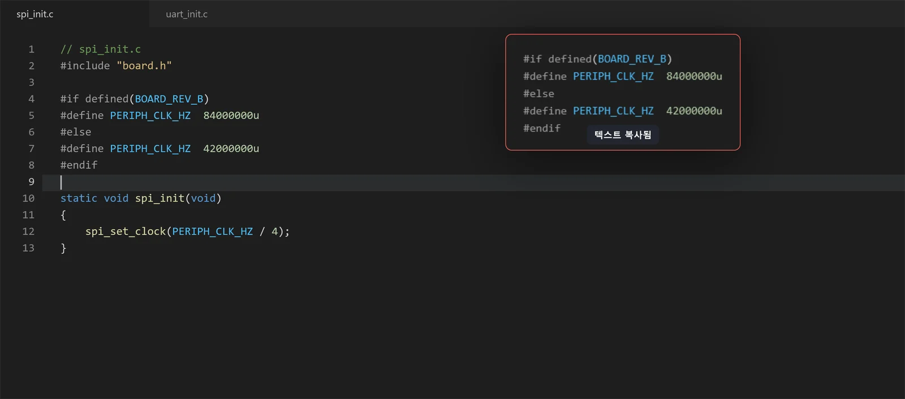
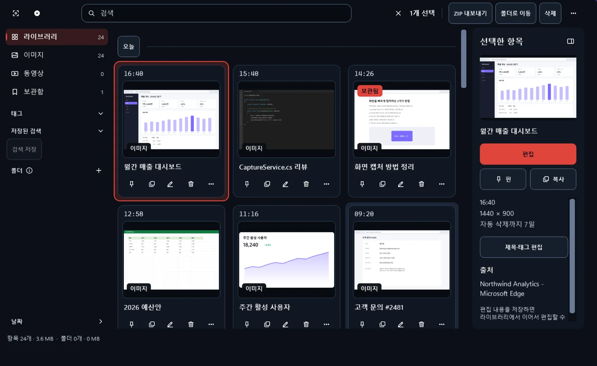

개발자를 위한 무료 Windows 캡처·핀 도구
고객 문의 화면을 Ctrl+Shift+C로 캡처하고, Ctrl+Shift+R로 이메일과 카드번호를 가린 다음, F3으로 고칠 코드 옆에 띄웠습니다. 설치하고 바로 쓰는 기본 단축키입니다.
무료 · Windows 11, Windows 10 22H2(x64)
개인정보 가리기
이슈에 붙일 화면에 고객 이메일이나 운영 서버의 키가 보일 때가 있습니다. 편집기에서 Ctrl+Shift+R을 누르면 화면 속 이메일 주소, 카드번호, IP 주소, 한국 전화번호와 주민등록번호 형태의 숫자, GitHub 토큰·AWS 액세스 키·sk-로 시작하는 API 키를 찾아 가림막을 씌웁니다.
가림막은 저장하기 전에 옮기거나 지울 수 있고, 실행 취소도 됩니다. 찾지 못한 곳은 모자이크나 블러로 직접 가리면 됩니다.

다른 창 위에 띄우는 핀
캡처하거나 복사한 이미지, 코드, 표를 F3으로 띄우면 다른 창보다 항상 위에 있는 작은 창이 됩니다. 문의 내용을 보면서 코드를 고치거나, 디자인 시안을 띄워 둔 채 화면을 맞출 때 씁니다.
핀은 투명도를 낮출 수 있고, 뒤에 있는 창을 클릭하도록 바꿀 수도 있습니다. 실수로 닫은 핀은 최근에 닫은 순서대로 다시 엽니다.

창 제목과 글자로 찾는 라이브러리
캡처할 때 그 창의 제목을 함께 저장하고, 이미지 속 글자는 이 PC에서 인식해 둡니다. CaptureService.cs 같은 파일 이름이나 오류 메시지의 한 구절을 입력하면 해당 캡처가 나옵니다.
녹화한 MP4도 같은 라이브러리에 날짜별로 모이고, 따로 플레이어를 열지 않고 그 자리에서 재생합니다.

캡처 도구에서 옮겨 오면
Windows 캡처 도구로 하던 일은 MyCapture에서도 같은 방식으로 합니다. 달라지는 것은 캡처 다음입니다.
그대로인 것
- 영역·창·전체 화면 캡처
- 캡처하면 바로 클립보드에 복사
- 펜과 형광펜으로 표시
더해지는 것
- 다른 창 위에 띄우는 핀
- 창 제목과 이미지 속 글자로 찾는 라이브러리
- 주민번호·카드번호·비밀 키까지 찾는 가리기
- 이미지 속 표를 CSV·Markdown으로 복사
기본 영역 캡처 단축키는 Ctrl+Shift+C입니다. Print Screen 키로 캡처하려면 설정에서 지정하십시오. Windows가 Print Screen 키를 캡처 도구에 연결해 두었다면 설정 화면에 끄는 방법과 Windows 설정 바로 가기가 나옵니다.
자주 묻는 질문
왜 무료입니까?
MyCapture는 소스 코드를 MIT 라이선스로 공개하는 프로젝트입니다. 앱이 접속하는 개발자 서버가 없어서 사용자가 늘어도 운영 비용이 늘지 않습니다. 유료 기능, 구독, 광고는 없습니다. 소스 코드는 GitHub에 있습니다.
캡처한 화면이 밖으로 나갑니까?
사용자가 보내지 않는 한 나가지 않습니다. 캡처, 편집, 녹화, 글자 인식은 이 PC에서 처리하고, 앱에는 사용 통계나 오류 보고를 보내는 기능이 없습니다. 인터넷에 연결하는 경우는 PC에 없는 글자 인식 모델을 내려받을 때와, GitHub 이미지 첨부처럼 사용자가 직접 실행한 기능에 연결이 필요할 때입니다. 전체 목록은 개인정보처리방침에 있습니다.
Windows 10에서도 쓸 수 있습니까?
4.3.0부터 Windows 10 버전 22H2(x64)를 지원합니다. 녹화하는 동안 화면 가장자리에 노란 테두리가 보일 수 있으며, 이 테두리는 녹화 결과에 들어가지 않습니다. 21H2 이하 버전과 ARM64 PC의 Windows 10은 지원하지 않습니다. Windows 11과의 차이는 지원 페이지의 표에 정리했습니다.
녹화에 소리가 들어가지 않는 이유는 무엇입니까?
MyCapture의 녹화는 버그 재현 과정이나 화면 조작을 짧게 보여 주고 GIF로 공유하는 용도에 맞췄습니다. 그래서 마이크와 시스템 소리를 녹음하지 않습니다. 소리가 필요한 녹화에는 다른 녹화 도구를 쓰십시오.
문의는 어디로 합니까?
세 가지 방법이 있습니다.
- GitHub: 지원 저장소에 이슈를 남겨 주십시오. Windows 버전, MyCapture 버전, 재현 단계를 적어 주시면 확인이 빠릅니다.
- Microsoft Store: MyCapture 페이지에 리뷰를 남길 수 있습니다. GitHub 계정이 없어도 됩니다.
- 앱 안: 4.4.0부터는 앱의 '문의하기' 창이 앱 버전과 Windows 버전 같은 진단 정보를 채워 줍니다. 내용만 적어 GitHub 이슈나 Store 리뷰로 보내면 됩니다.
보안 문제는 공개 이슈 대신 비공개 보안 신고로 알려 주십시오.